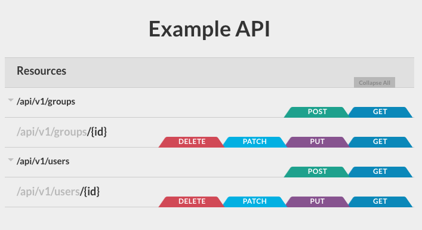

Django REST framework 3.5¶
The 3.5 release is the second in a planned series that is addressing schema generation, hypermedia support, API client libraries, and finally realtime support.
Funding¶
The 3.5 release would not have been possible without our collaborative funding model. If you use REST framework commercially and would like to see this work continue, we strongly encourage you to invest in its continued development by signing up for a paid plan.
Many thanks to all our sponsors, and in particular to our premium backers, Rover, Sentry, Stream, and Machinalis.
Improved schema generation¶
Docstrings on views are now pulled through into schema definitions, allowing you to use the schema definition to document your API.
There is now also a shortcut function, get_schema_view(), which makes it easier to
adding schema views to your API.
For example, to include a swagger schema to your API, you would do the following:
-
Run
pip install django-rest-swagger. -
Add
'rest_framework_swagger'to yourINSTALLED_APPSsetting. -
Include the schema view in your URL conf:
from rest_framework.schemas import get_schema_view
from rest_framework_swagger.renderers import OpenAPIRenderer, SwaggerUIRenderer
schema_view = get_schema_view(
title="Example API", renderer_classes=[OpenAPIRenderer, SwaggerUIRenderer]
)
urlpatterns = [path("swagger/", schema_view), ...]
There have been a large number of fixes to the schema generation. These should
resolve issues for anyone using the latest version of the django-rest-swagger
package.
Some of these changes do affect the resulting schema structure, so if you're already using schema generation you should make sure to review the deprecation notes, particularly if you're currently using a dynamic client library to interact with your API.
Finally, we're also now exposing the schema generation as a publicly documented API, allowing you to more easily override the behavior.
Requests test client¶
You can now test your project using the requests library.
This exposes exactly the same interface as if you were using a standard requests session instance.
client = RequestsClient()
response = client.get('http://testserver/users/')
assert response.status_code == 200
Rather than sending any HTTP requests to the network, this interface will coerce all outgoing requests into WSGI, and call into your application directly.
Core API client¶
You can also now test your project by interacting with it using the coreapi
client library.
# Fetch the API schema
client = CoreAPIClient()
schema = client.get('http://testserver/schema/')
# Create a new organization
params = {'name': 'MegaCorp', 'status': 'active'}
client.action(schema, ['organizations', 'create'], params)
# Ensure that the organization exists in the listing
data = client.action(schema, ['organizations', 'list'])
assert(len(data) == 1)
assert(data == [{'name': 'MegaCorp', 'status': 'active'}])
Again, this will call directly into the application using the WSGI interface, rather than making actual network calls.
This is a good option if you are planning for clients to mainly interact with
your API using the coreapi client library, or some other auto-generated client.
Live tests¶
One interesting aspect of both the requests client and the coreapi client
is that they allow you to write tests in such a way that they can also be made
to run against a live service.
By switching the WSGI based client instances to actual instances of requests.Session
or coreapi.Client you can have the test cases make actual network calls.
Being able to write test cases that can exercise your staging or production environment is a powerful tool. However in order to do this, you'll need to pay close attention to how you handle setup and teardown to ensure a strict isolation of test data from other live or staging data.
RAML support¶
We now have preliminary support for RAML documentation generation.

Further work on the encoding and documentation generation is planned, in order to make features such as the 'Try it now' support available at a later date.
This work also now means that you can use the Core API client libraries to interact with APIs that expose a RAML specification. The RAML codec gives some examples of interacting with the Spotify API in this way.
Validation codes¶
Exceptions raised by REST framework now include short code identifiers. When used together with our customizable error handling, this now allows you to modify the style of API error messages.
As an example, this allows for the following style of error responses:
{
"message": "You do not have permission to perform this action.",
"code": "permission_denied"
}
This is particularly useful with validation errors, which use appropriate codes to identify differing kinds of failure...
{
"name": {"message": "This field is required.", "code": "required"},
"age": {"message": "A valid integer is required.", "code": "invalid"}
}
Client upload & download support¶
The Python coreapi client library and the Core API command line tool both
now fully support file uploads and downloads.
Deprecations¶
Generating schemas from Router¶
The router arguments for generating a schema view, such as schema_title,
are now pending deprecation.
Instead of using DefaultRouter(schema_title='Example API'), you should use
the get_schema_view() function, and include the view in your URL conf.
Make sure to include the view before your router urls. For example:
from rest_framework.schemas import get_schema_view
from my_project.routers import router
schema_view = get_schema_view(title='Example API')
urlpatterns = [
path('', schema_view),
path('', include(router.urls)),
]
Schema path representations¶
The 'pk' identifier in schema paths is now mapped onto the actually model field
name by default. This will typically be 'id'.
This gives a better external representation for schemas, with less implementation
detail being exposed. It also reflects the behavior of using a ModelSerializer
class with fields = '__all__'.
You can revert to the previous behavior by setting 'SCHEMA_COERCE_PATH_PK': False
in the REST framework settings.
Schema action name representations¶
The internal retrieve() and destroy() method names are now coerced to an
external representation of read and delete.
You can revert to the previous behavior by setting 'SCHEMA_COERCE_METHOD_NAMES': {}
in the REST framework settings.
DjangoFilterBackend¶
The functionality of the built-in DjangoFilterBackend is now completely
included by the django-filter package.
You should change your imports and REST framework filter settings as follows:
rest_framework.filters.DjangoFilterBackendbecomesdjango_filters.rest_framework.DjangoFilterBackend.rest_framework.filters.FilterSetbecomesdjango_filters.rest_framework.FilterSet.
The existing imports will continue to work but are now pending deprecation.
CoreJSON media type¶
The media type for CoreJSON is now application/json+coreapi, rather than
the previous application/vnd.json+coreapi. This brings it more into line with
other custom media types, such as those used by Swagger and RAML.
The clients currently accept either media type. The old style-media type will be deprecated at a later date.
ModelSerializer 'fields' and 'exclude'¶
ModelSerializer and HyperlinkedModelSerializer must include either a fields
option, or an exclude option. The fields = '__all__' shortcut may be used to
explicitly include all fields.
Failing to set either fields or exclude raised a pending deprecation warning
in version 3.3 and raised a deprecation warning in 3.4. Its usage is now mandatory.